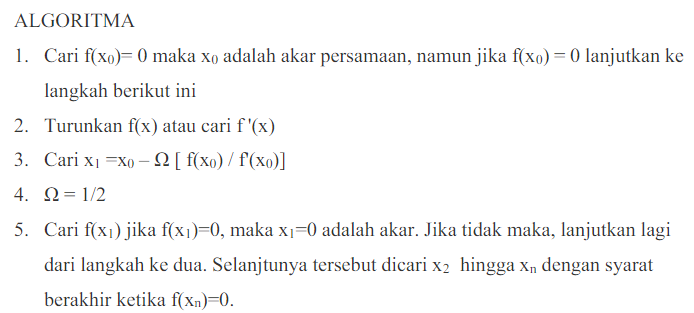

Metode Newton Raphson
Metode Newton Raphson adalah sebuah cara untuk menemukan akar sebuah fungsi,misalkan f(x) dengan melakukan pendekatan pada suatu titik. Syaratnya f(x) harus memilikisebuah turunan. Metode ini jika dibandingkan dengan metode bagi dua (
bisectionmethod)
tergolong lebih mudah. TerkaitMetode Newton Raphson biasa digunakan dalam mencari akar dari suatu persamaannon linier, jika diasumsikan
f mempunyai turunan kontinu f’. Metode Newton Rapshon sering
digunakan karena kesederhanaannya dan mempunyai konvergensi yang cepat. Karenametode ini merupakan metode Terbuka, maka tetap diperlukan nilai tebakan awal untuk Xo.Secara geometri, metode Newton Raphson hampir sama dengan metode regula falsi, bedanyagaris yang dipakai adalah garis singgung. Dengan menggunakan x0 sebagai tebakan awal,dilanjutkan dengan mencari titik (x0, f(x0)). Kemudian dibuat garis singgung dari titik (x0,f(x0)), sehingga diperoleh titik potong (x1, 0) antara sumbu-x dan garis singgung titik (x0,f(x0)). Kemudian dilanjutkan lagi dengan mencari titik (x1, f(x1)). Dari titik (x1, f(x1))kemudian dibuat garis singgung, sehingga diperoleh titik potong (x2, 0) antara sumbu-x dangaris singgung titik (x1, f(x1)).Dalam melakukan metode ini, bila semakin dekat titik acuan awal yang dipilih dengan akareksak maka akan semakin mudah konvergen. Contoh ilustrasi methode newton raphson sebagai berikut.

